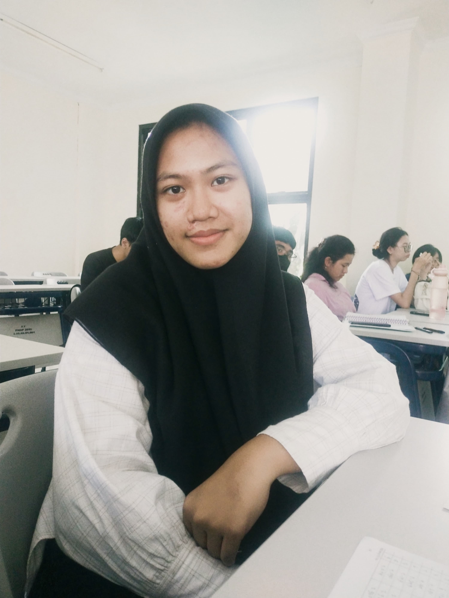
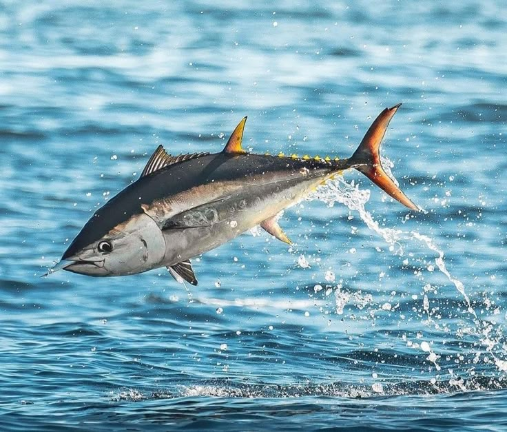

Scroll

Saya seorang pengembang perangkat lunak yang memiliki ketertarikan mendalam dalam membangun sistem cerdas. Saat ini, saya sedang mendalami bidang Machine Learning dan Deep Learning untuk menciptakan solusi berbasis data yang efisien.
Berfokus pada pengembangan backend dan pemrosesan data, saya terus bereksperimen dengan model-model AI untuk memahami bagaimana teknologi dapat membantu memecahkan masalah kompleks.
Studi komparatif kinerja ResNet-50, EfficientNet-B0, dan MobileNetV3 dalam deteksi kerusakan bangunan melalui citra digital.
Lihat Riset →
02Analisis data produksi perikanan di Sulawesi Utara untuk optimalisasi pemantauan stok menggunakan algoritma Random Forest.
Lihat Jurnal → 03
03
Pengembangan sistem IoT untuk pemantauan kualitas air laut secara real-time yang didokumentasikan dalam bentuk E-book.
Lihat Proyek →"The only way to do great work is to love what you do."